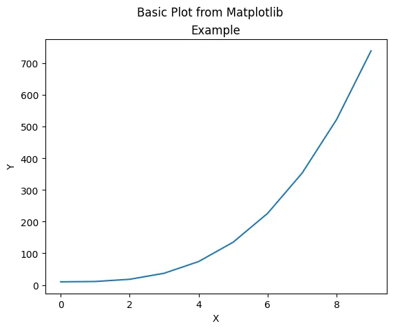
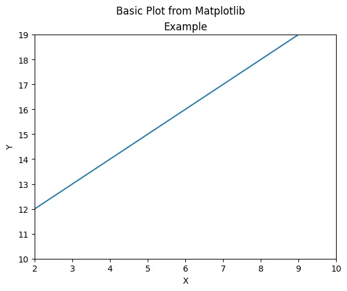
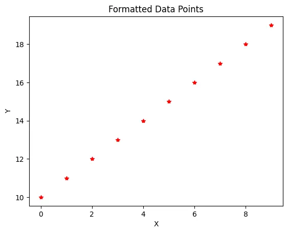
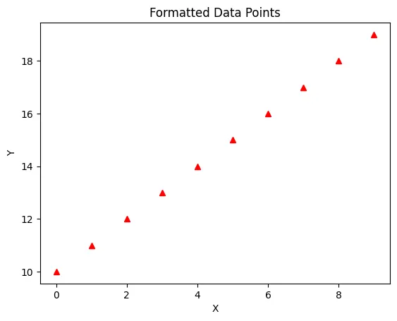
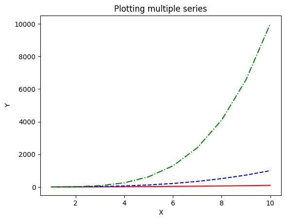
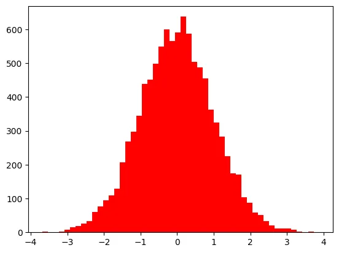
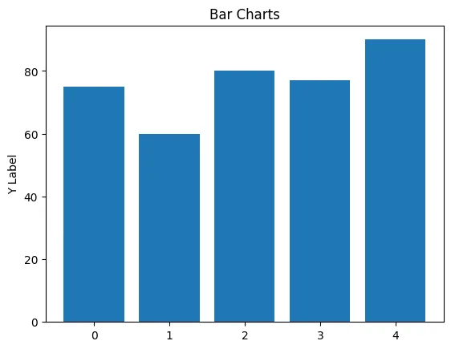
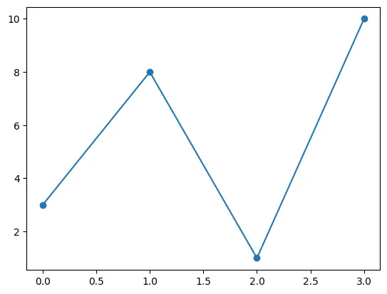
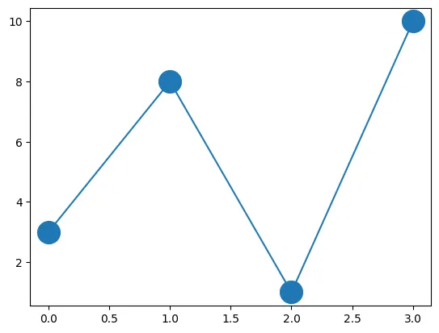
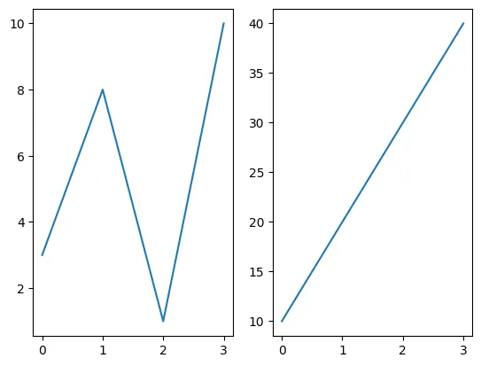

Share on LinkedIn Back to All Blogs
Matplotlib Operations
Matplotlib is a library for creating plots ,graphs and charts. It draws its influence from Matlab, and it works efficiently with NumPy and Pandas for good graphic visualization which enhances yout data analysis projects. We start with importing matplotlib.pyplot library and using %matplotlib inline
You can view the documentation in more detail here:
import matplotlib.pyplot as plt
#The below line helps in presenting plots in Jupyiter notebook.
%matplotlib inlineLets create some data for our first graph,
A plot from two numpy arrays x y using plot().
import numpy as np
x=np.arange(0,10)
y=x**3+10
result = plt.plot(x, y)
plt.xlabel("X")
plt.ylabel("Y")
plt.title("Example")
plt.suptitle("Basic Plot from Matplotlib")
plt.show()
In the above code,
- We called the plot() function to plot the graph between the data we have created.
- We named the x and the y labels using xlabel() and ylabel()
- We named the graph with a title using title()
- We showed the graph here using the show() function
From the graph above we saw that the boundary of x and y axis is selected automatically based on the data we have created. We can vary this using the plt.axis() function where the we pass a list which has the x axis and y axis parameters
x=np.arange(0,10)
y=x+10
result = plt.plot(x, y)
plt.axis([2,10,10,19])
plt.xlabel("X")
plt.ylabel("Y")
plt.title("Example")
plt.suptitle("Basic Plot from Matplotlib")
plt.show()
While we are calling the plot function we can specify the color of the graph line, the types of points we can use and more using a formatted string passed to the plot function.
plt.plot(
x, y, "r*"
)
plt.xlabel("X")
plt.ylabel("Y")
plt.title("Formatted Data Points")
plt.show()
Colors
| character | color |
|---|---|
| b | blue |
| g | green |
| r | red |
| c | cyan |
| m | magenta |
| y | yellow |
| k | black |
| w | white |
Line Styles
| character | description |
|---|---|
| - | solid line |
| -- | dashed line |
| -. | dash-dot |
| : | dotted line |
| . | point marker |
| , | pixel marker |
| o | circle marker |
plt.plot(
x, y, "r^"
)
plt.xlabel("X")
plt.ylabel("Y")
plt.title("Formatted Data Points")
plt.show()
We can plot the x and y of multiple graphs in the same plot
using the option of sequencing them as below :
plot(x1,y1,format1,x2,y2,format2,x3,y3,format3)
x = np.array([1, 2, 3, 4, 5, 6, 7, 8, 9, 10])
y2 = x**2
y3 = x**3
y4 = x**4
result = plt.plot(
x, y2, "r-", x, y3, "b--", x, y4, "g-."
)
plt.xlabel("X")
plt.ylabel("Y")
plt.title("Plotting multiple series")
plt.show()
The hist() function is used to plot a histogram
x = np.random.randn(10000)
result=plt.hist(x, bins=50,color="red")
plt.show()
print(result)
Bar Charts
groups = [0, 1, 2, 3, 4]
grparray = np.array(groups)
values = [75, 60, 80, 77, 90]
plt.bar(
groups, values, align="center"
)
plt.ylabel("Y Label") # label the y-axis
plt.title("Bar Charts") # title is a matlab-like formatting string
plt.show()
ypoints = np.array([3, 8, 1, 10])
plt.plot(ypoints, marker="o") # plot the points
plt.show()
ypoints = np.array([3, 8, 1, 10])
plt.plot(ypoints, marker="o", ms=20)
plt.show()
Subplots mean a group of smaller axes that can exist together
within a single figure. subplot(rows,columns,plot_number)
# plot 1:
x = np.array([0, 1, 2, 3])
y = np.array([3, 8, 1, 10])
plt.subplot(1, 2, 1)
plt.plot(x, y) # plot the data
# plot 2:
x = np.array([0, 1, 2, 3])
y = np.array([10, 20, 30, 40])
plt.subplot(1, 2, 2)
plt.plot(x, y)
plt.show()